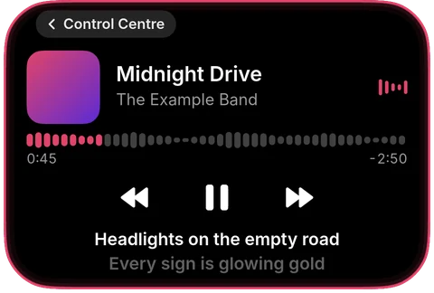
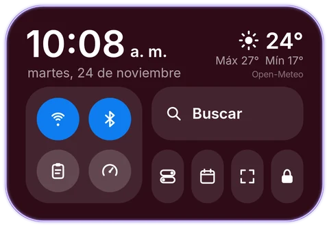
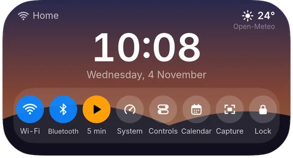
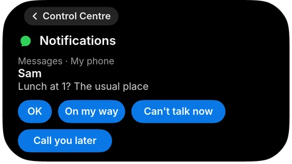
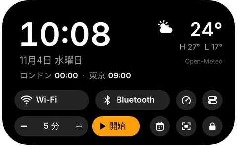
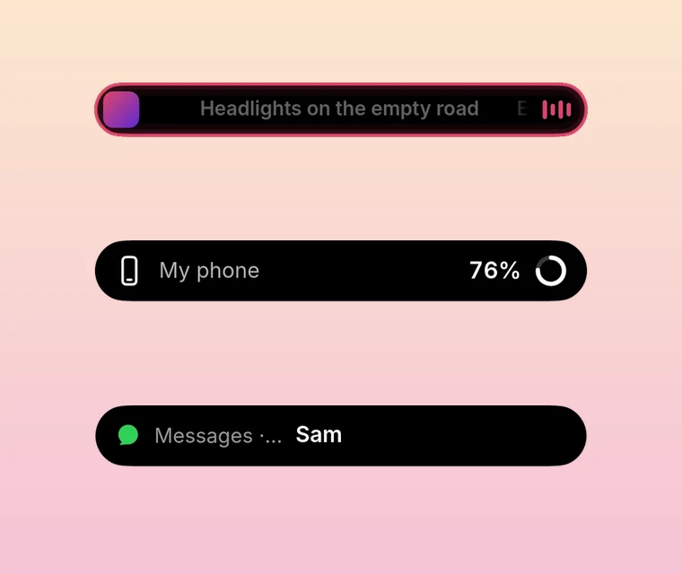
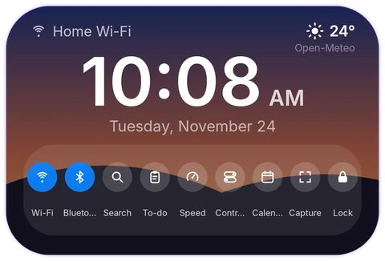

Music, with synced lyrics
Album art, play and skip, a scrubber and the words of the song, from whatever you play music in.

Islet puts a Dynamic Island-style pill at the top of your screen on Windows, Mac, Linux and Android. Your music, timers and your phone's messages open from it, and it stays small when nothing is happening.
Free and open source · about 5 MB of memory · version {{version}}

Album art, play and skip, a scrubber and the words of the song, from whatever you play music in.

Wi-Fi, Bluetooth and a timer, with your own photo behind them.

Answer them from the computer, ring a lost phone, share text both ways.

English, Spanish, French, German, Portuguese, Russian, Chinese, Japanese, Arabic and Hindi, with dates and city names to match.

The island is a native program, not a web page, so it costs almost nothing while it waits for something to show.

Four short clips, drawn frame by frame by Islet's own code: Control Centre, the phone and computer together, Android, and the ten languages.
Released {{date}}. Every feature is included, with no paid version.
Windows 10 and 11 · {{size:windows}}
Get the installerIf Windows says “Windows protected your PC”, click More info, then Run anyway.
Apple silicon and Intel · {{size:mac}}
Get the disk imageThe first time, open System Settings, Privacy & Security, and click Open Anyway.
Ubuntu, Fedora and more · {{size:deb}}
Get the .debRuns on X11 and Wayland desktops.
Android 8 or later · {{size:android}}
Get the appLet your browser install apps, then switch Islet on with the guide.
Yes. Every feature, with no ads, accounts or paid version. The code is open source under the MIT licence, so anyone can read it on GitHub.
Windows and Mac warn about apps from small developers without a paid signing certificate. Islet has applied for free Windows signing from SignPath Foundation; until then, the steps above get past the warning. The phone app and Islet's own updates are already signed.
Nothing about you. It goes online only for features you switch on, such as the weather for a place you pick or synced lyrics, and never for analytics. This site sets no cookies and loads nothing from other sites.
No. Apple doesn't let apps draw over other apps or read their notifications, so Islet is for Android phones and for Windows, Mac and Linux computers.
